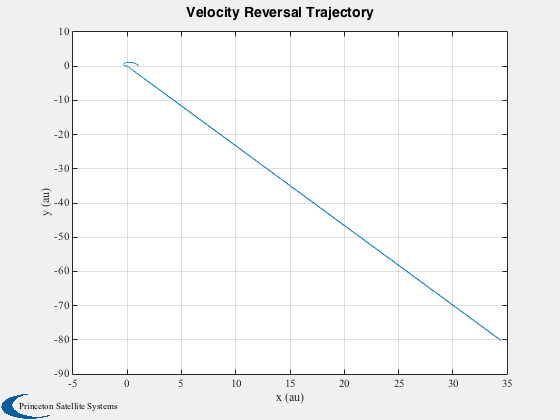
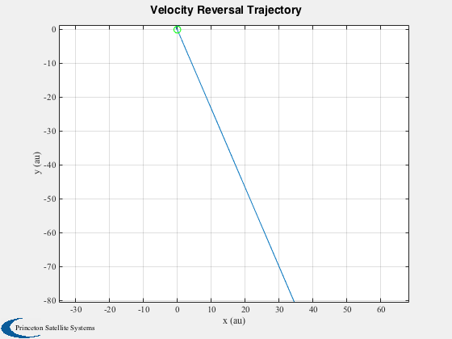

Planar heliopause mission simulation.
Can use either a built-in specular sail force disturbance function or the
full sail disturbance function. Uses the FlatSail CAD model.
The sail characteristic acceleration is about 4.6e-6 km/s2.
This simulation has a simple laser model. When the spacecraft is
past earth orbit it adds the power from the laser model along the
velocity vector. This is added to the sun acceleration. The laser model
only works with the specular model. The logic works by turning on the
laser after the spacecraft has flown by the sun.
Functions demonstrated:
RHSHelio2DOrbit
HeliopauseSailAngle
FlatPlate
Since version 10.
------------------------------------------------------------------------
See also Constant, Plot2D, TimeLabl, JD2000, HeliopauseSailAngle
------------------------------------------------------------------------
Contents
disturbModel = 1;
laserOn = 0;
Load the flat plate model
d.g = load(fullfile('SailData','FlatSail.mat'));
d.g.component(1).v = 2*d.g.component(1).v;
Disturbance model data
d.distModel.aeroOn = 0;
d.distModel.albedoOn = 0;
d.distModel.solarOn = 1;
d.distModel.magOn = 0;
d.distModel.radOn = 0;
d.distModel.ggOn = 0;
d.distModel.planet = 'Sun';
d.jD0 = JD2000;
The maximum number of days for the numerical integration
maxDays = 365;
Constants
mu = Constant('mu sun');
aU = Constant('au');
lbFToN = Constant('lb force to n');
lbFToKg = Constant('lb force to kg');
c = Constant('speed of light')*1e3;
secInDay = 86400;
mToKm = 1/1000;
Build the data structure for the differential equations
d.tEnd = maxDays*secInDay;
d.mu = mu;
d.m0 = 100;
The following are for the specular model only
area = 350*d.m0;
p = 1367;
d.accel = 2.0*(p/c)*area*mToKm*aU^2/d.m0;
Sail pointing angle function
d.sailAngleFun = 'HeliopauseSailAngle';
Select the disturance model
switch disturbModel
case 1
d.forceModel = 'specular';
otherwise
d.forceModel = 'full';
end
disp('HeliopauseSimulation:')
disp(['Disturbance type: ' d.forceModel])
if( laserOn == 1)
disp('Laser on');
end
if( laserOn )
d.laserOn = 1;
d.laser.power = 1e9;
d.laser.lambda = 526e-9;
d.laser.aperture = 10;
d.laser.f = 2.0*(1/c)*mToKm/d.m0;
d.laser.area = area;
d.laser.aU = aU;
else
d.laserOn = 0;
end
HeliopauseSimulation:
Disturbance type: specular
Set up ode113
oDEOptions = odeset( 'abstol', 1e-12, 'reltol', 4e-8, 'events', 'off' );
Initial conditions. States are [r;dr/dt;drTheta/dt]
x = [aU;0;sqrt(d.mu/aU);0];
[t, x] = ode23('RHSHelio2DOrbit', [0, d.tEnd], x, oDEOptions, d );
x = x';
angle = HeliopauseSailAngle( x, t );
[t, tL] = TimeLabl( t' );
Plot the orbit
c = cos( x(4,:) );
s = sin( x(4,:) );
Plot2D( x(1,:).*c/aU, x(1,:).*s/aU, 'x (au)', 'y (au)','Velocity Reversal Trajectory' )
hold on

Plot the initial orbit
a = linspace(0,2*pi);
plot(x(1,1)*cos(a)/aU,x(1,1)*sin(a)/aU,'g');
axis equal
hold off
yL = {'Sail Angle (deg)' 'u (km/s)' 'v (km/s)'};
Plot2D( t, [angle*180/pi;x(2,:);x(3,:)], tL, yL, 'Sail Angle and Velocities' );
